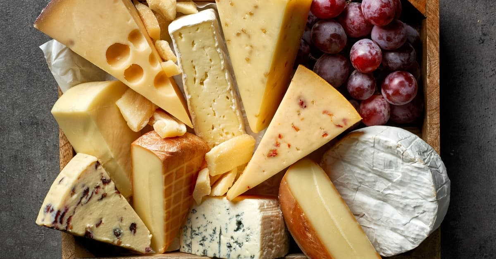

Сир — їжа, що виготовляється з молока різних тварин шляхом зброджування його сичугом або різними молочно-кислими бактеріями і відокремленні сироватки. Харчовий продукт виготовляють у вигляді напівтвердої чи твердої маси, яку одержують сквашуванням молока і подальшою обробкою згустку. Існує багато видів сиру, і їх класифікують, наприклад, за типом молока, вмістом жиру, консистенцією, процесом виробництва та часом дозрівання. Як правило, використовується молоко домашньої худоби: корів, кіз, овець, буйволів. Зазвичай має світло-жовтий або білий колір.
Сир — один з найпопулярніших харчових продуктів у світі. У світі виготовляють сотні сортів сиру. Їхні тип, консистенція і аромат залежать від походження молока (включаючи харчування тварин), того, чи було воно пастеризоване, жирності, бактерій і цвілі, обробки, умов і тривалості дозрівання. Як ароматизатори можуть використовувати трави, спеції або деревний дим. Жовтий та червоний колір багатьох сирів є наслідком додавання аннато. Пліснява у сирах з цвіллю може мати білий, синювато-зелений або темно-червоний колір.

Сир можна подавати на сніданок, обід, вечерю. У деяких народів гострі сири подають на десерт, перед фруктами.